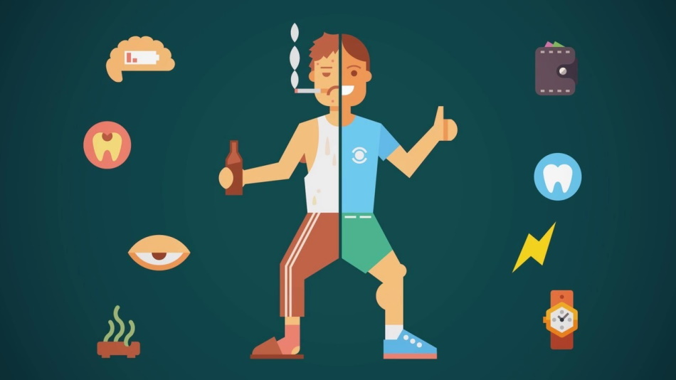
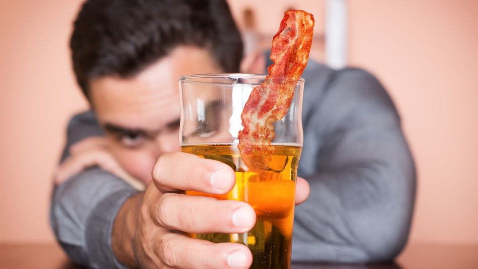

ВЛИЯНИЕ ВРЕДНЫХ ПРИВЫЧЕК НА ОРГАНИЗМ ЧЕЛОВЕКА
Согласно статистике, практически 75% населения имеют вредные привычки. Многие даже не догадываются, к каким последствиям это может привести. К самым распространенным пагубным привычкам относят курение, пристрастие к алкогольным напиткам и наркотическим веществам, а также нездоровые пищевые привычки. Как же эти факторы влияют на человеческий организм?

НЕПРАВИЛЬНОЕ ПИТАНИЕ
Несбалансированное питание и отсутствие режима употребления пищи – это серьезная проблема, которая может за короткое время разрушить здоровье.
Самые распространенные погрешности в режиме питания и диете – это:
• Употребление еды перед сном. Это значительно усложняет работу желудочно-кишечного тракта, приводит к перебоям в работе пищеварительной системы.
• Излишнее употребление сладкого. Сладкое – это быстрые углеводы, которые резко повышают уровень сахара в крови. После резкого скачка наступает такой же резкий спад. Частые скачки могут вызвать сбой в эндокринной системе организма. Кроме того, сладкоежки часто переедают, т.к. падение уровня сахара вызывают острое чувство голода. Кроме того, избыточное употребление сахара вызывает заболевания полости рта и нарушает пищеварение.
• Большое количество соленого в рационе. Излишки соли пагубно влияют на почки и мочевыделительную систему в целом. Также это может вызвать проблемы с опорно-двигательным аппаратом.
Отдельного внимания заслуживают такие расстройства пищевого поведения, как анорексия и булимия. Анорексия - это отказ от пищи или существенное ограничение питания, а булимия – неконтролируемое переедание, после которого человек ощущает стыд и вызывает у себя рвоту. Расстройства пищевого поведения ведут к авитаминозу, анемии, истощению, нарушениям в работе сердечно-сосудистой системы. Это опасные для жизни состояния, которые требуют обязательной консультации с диетологом и психиатром.

ОТКАЗ ОТ ВРЕДНЫХ ПРИВЫЧЕК И ПОЛОЖИТЕЛЬНЫЕ ПОСЛЕДСТВИЯ ДЛЯ ЗДОРОВЬЯ
Отказ от вредных привычек имеет следующие положительные последствия:
• Вес придет в норму. Если вы перейдете на правильное питание, автоматически улучшится метаболизм. Также нормализуется работа желудочно-кишечного трака. При отказе от алкоголя улучшится состав крови, так как печень сможет работать в полную силу и полноценно фильтровать кровь. Нормализуется уровень артериального давления.
• Если бросить курить, постепенно очистятся легкие, пройдет кашель, снизится частота заболеваний простудного характера. Риск развития инсульта или инфаркта снизится до минимума. Самочувствие станет отличным, по утрам вы будете просыпаться бодрым и полным сил.
• При отказе от наркотических средств жизнь измениться кардинально. Питание головного мозга нормализуется, пройдут головные боли, агрессия, боли в мышцах, наладятся отношения в семье, нормализуется настроение, жизнь вновь приобретет яркие краски.
Эффективным бывает коллективный отказ от вредной привычки, например, в рабочем коллективе. В нашей практике был случай, когда на предприятии был проведен День Здоровья, направленный на борьбу с курением. Это привело к снижению числа курящих на 11%. Но мероприятие имело и отсроченный эффект – те, кто смог отказаться от курения, стали примером для других. А те, кто уже бросил курить, поддержали своих бросающих коллег – и в результате процент тех, кто смог отказаться от вредной привычки, составил 85%. А число получаемых больничных листов при этом снизилось в три раза!